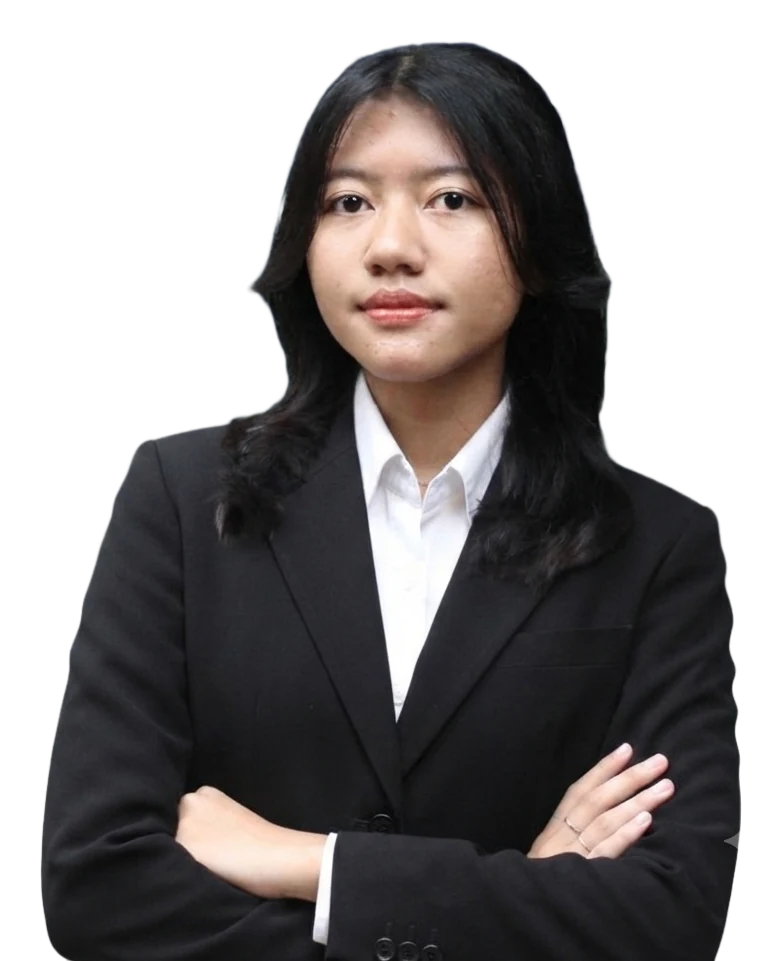

-
B.Eng. Computer Engineering
Universitas Indonesia, Depok. GPA 3.83 / 4.0
Coursework includes Algorithms & Programming, Computer Network Security, and Operating Systems.
-
Accelerated Academic Program
SMA Muhammadiyah 3 Jakarta
Completed high school in two years and graduated as valedictorian, ranked 1st among all graduates.
Khalisa Zahra Maulana
Computer engineering student at Universitas Indonesia, building across hardware, software, and AI.
GPA 3.83 / 4.0. Lab assistant to 300+ students per cohort. 2nd place, Garuda Hacks 7.0.

About
I am a Computer Engineering student at Universitas Indonesia with a GPA of 3.83/4.00 and a strong interest in understanding how computing systems operate across hardware and software layers. From embedded systems such to backend infrastructure and server-side applications, I enjoy exploring how individual components work together to form reliable, integrated systems.
My experience spans software development, data-driven applications, and hardware integration. My projects include Tambak, an AI-powered decision support platform for biofloc aquaculture that won 2nd place at Garuda Hacks 7.0, a full-stack inventory management application, and Heimdall Lite, a network detection lab evaluating Suricata rules alongside machine learning approaches. Beyond development, I serve as a laboratory assistant, teaching Algorithms & Programming and Digital System Design to cohorts of over 300 students. I am also involved in student leadership at BEM FTUI, where I lead publication strategy within the Academic & Professional Development division.
Education
Experience
- Work and research
- Leadership and teams
-
University Representative, NTU PEAK ASEAN Programme
Mayapada Hospital Kuningan, Jakarta
With a student team, worked to reduce OPD waiting time for health insurance patients. Led the technical side by refactoring the internal D’Health web system for real-time, securely limited visibility of medical process status, and proposed an automated pharmacy stock check in the doctor’s prescribing workflow.
-
Laboratory Assistant
Digital Laboratory, Department of Electrical Engineering
Teach Algorithms & Programming, Digital System Design, and C Programming across Computer, Electrical, and Biomedical Engineering. Co-developed the practicum curriculum, led the international class for exchange students, and help maintain lab servers and FPGA systems.
-
Vice Head, Academic & Professional Development
Student Executive Board, Faculty of Engineering UI
Lead publication strategy and visual design in Figma for @bemftui and @adkesma.ftui: 29K+ followers, 100K+ views, top post above 32K. Steering Committee for Engineering After Campus Series.
-
Hardware Staff
EXERCISE FTUI
Designed 3D mechanical parts in Autodesk Inventor, including a mini robot and microcontroller casing. Completed DataCamp courses in AI, SQL, and data science.
-
Project Lead, CIRCAIT
Company and Institution AI Trip, Surabaya
Ran a 3-day academic-industry visit to Faber-Castell, Ajinomoto, and IDTH for 50 students and 3 faculty members, covering logistics, partnerships, and schedule.
-
Junior Mechanical Staff, Team Astro
Kombo Robotics Community, Surabaya
Designed and stress-analysed parts in Autodesk Inventor for a robot that placed 3rd in KRI (KRTMI) among 300+ teams nationwide.
Projects
Awards and certificates
Awards
Certificates
Skills
- Languages
- Python, C/C++, Java, JavaScript, VHDL, x86 and AVR Assembly
- AI and machine learning
- scikit-learn, Random Forest, YOLO, computer vision, OpenAI API
- Security and networking
- Suricata, Wireshark, network traffic analysis, TCP/IP, Linux, Cisco CCNA
- Software and development
- Next.js, Node.js, Spring Boot, PostgreSQL, MongoDB, Git, Streamlit, Figma
- Spoken
- Indonesian (native), English (proficient)
Gallery
Documents
Contact
Open to internships, research, and collaborations in embedded systems, AI, and software.